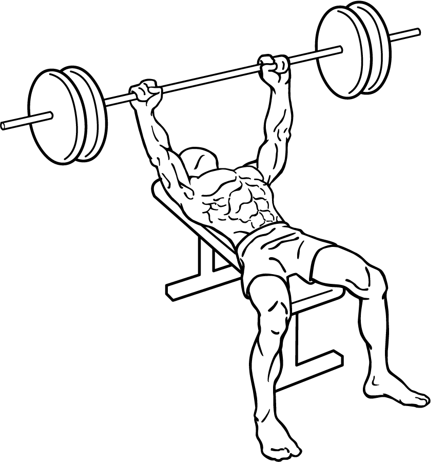
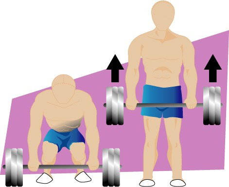

-
Squat

-
Bench Press
 -
Deadlift

Competitors are further subdivided into sex, age and weight categories. Each lifter is allowed 3 attempts at each lift. A lifter must successfully complete at least one attempt in each of the 3 lift. The heaviest successful attempt in each lift is then counted towards the lifter's total amount. The lifter with the highest total of the three lifts wins their respective weight class. In the event of a tie, the lighter lifter wins.
There are several different powerlifting organizations, and age and weight categories vary from organization to organization. The International Powerlifting Federation (or IPF) is the largest powerlifting organization in the world. IPF weight and age categories are as follows:
Age Categories- Open, Age 19+
- Sub-Junior, Age 14-18
- Junior, Age 19-23
- Master I, Age 40-49
- Master II, Age 50-59
- Master III, Age 60-69
- Master IV, Age 70+
- 53.0 kg (Sub-Junior and Junior, only)
- 59.0 kg
- 66.0 kg
- 74.0 kg
- 83.0 kg
- 93.0 kg
- 105.0 kg
- 120.0 kg
- 120.0+ kg
- 43.0 kg (Sub-Junior and Junior, only)
- 47.0 kg
- 52.0 kg
- 57.0 kg
- 63.0 kg
- 69.0 kg
- 76.0 kg
- 84.0 kg
- 84.0+ kg
Getting started in the sport of powerlifting is relatively straightforward. Access to weight training equipment, such as at a local gym, and a desire to improve physical strength is all that is required. Coaching, support equipment such as belts and sleeves, and nutriontional supplements such as creatine, while useful, are not required.
The internet also has a plethora of information on introductory strength training programs, that would be helpful for getting started in powerlifting, or strength training in general. Websites such as Starting Strength and Stronglifts have popular introductory strength training programs. As well, many videos on powerlifting and strength training can be found on Youtube.